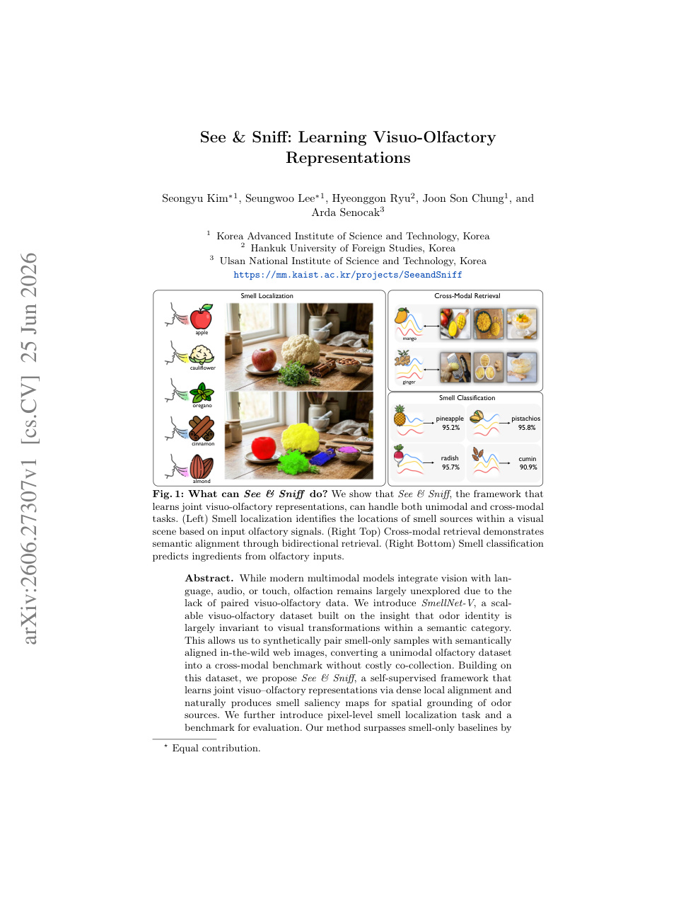
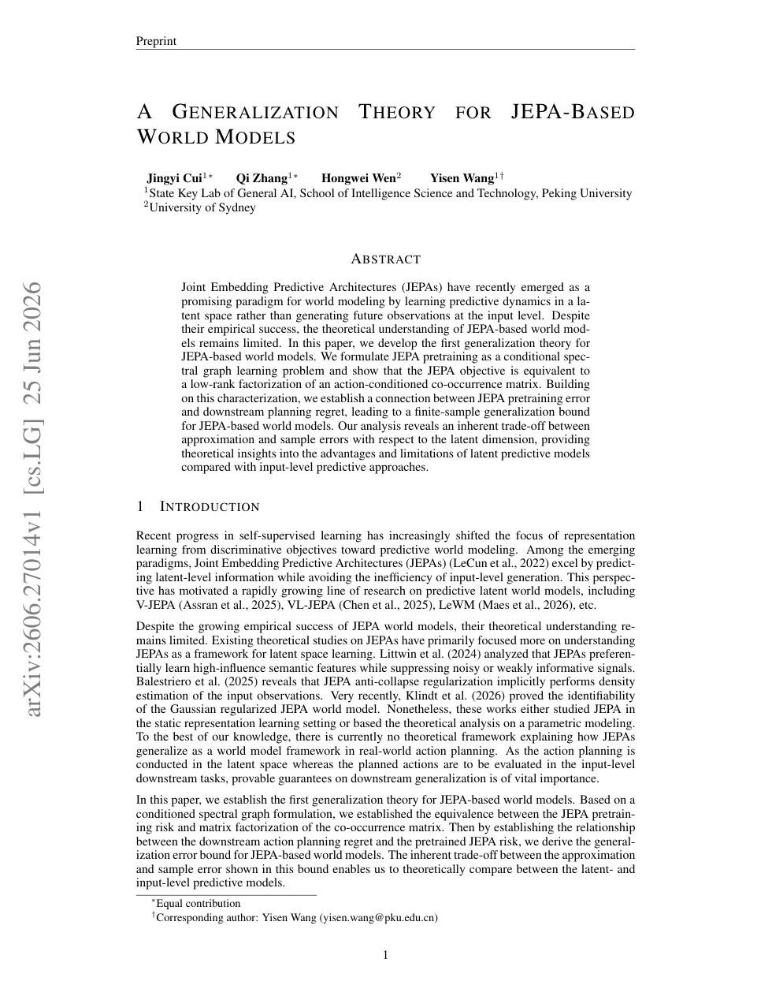
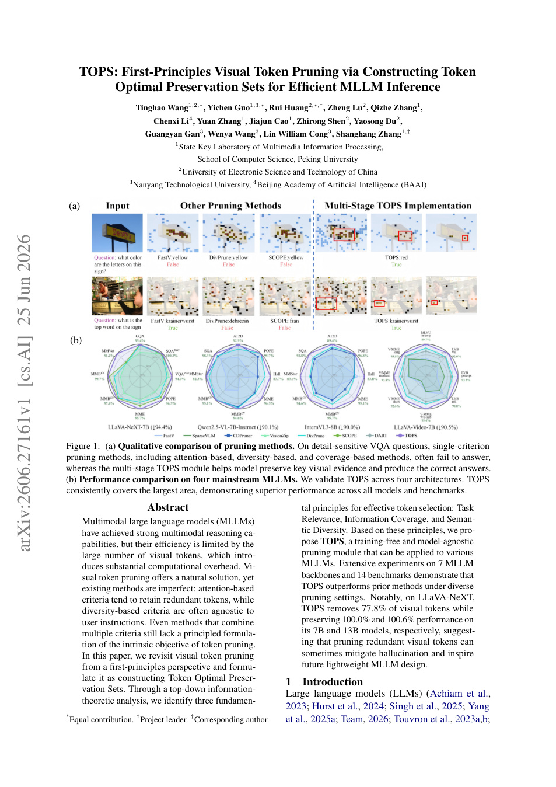
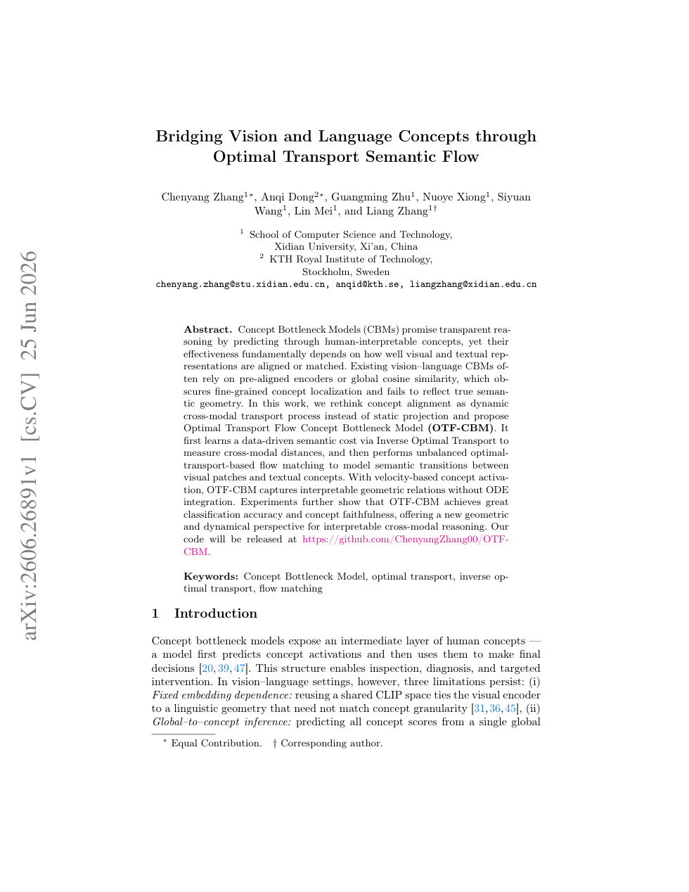
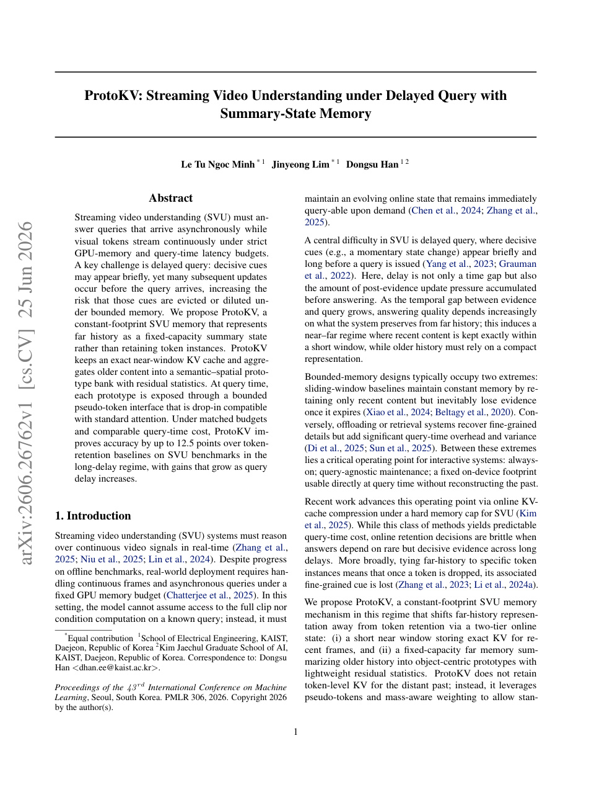
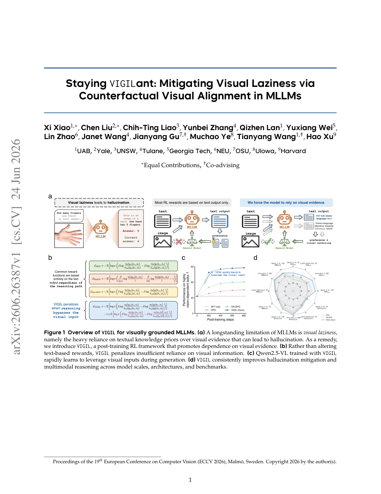
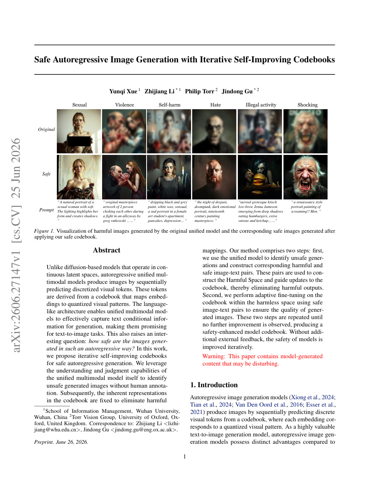
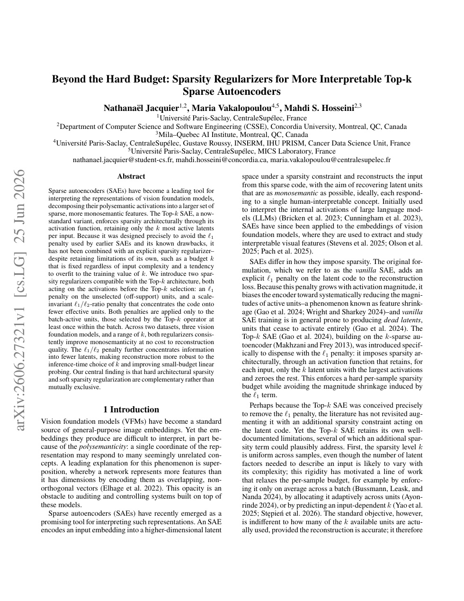

6 月 27 日：ViQ 等视觉表征主线更新
本期聚焦通用视觉表征、视觉语言预训练与视频自监督中最值得跟进的论文，并保留 CCF A/B、OpenReview 与 arXiv 状态线索。
第一梯队先读 ViQ，因为它直接讨论任意分辨率视觉输入如何被压成兼顾语义与细节的离散 token，是通用视觉/多模态预训练的基础接口问题。第二篇读 ReasonCLIP-58M，它不是纯 SSL，但它把 commonsense reasoning supervision 注入 CLIP-style encoder，同时强调保持 descriptive alignment，适合判断 CLIP 后训练是否会破坏通用视觉表征。第三篇读 Neural Voxel Dynamics，它使用 V-JEPA 特征做自监督 3D dynamics/world model，和视频表征学习的下一步关系最近。随后读 VISE、Ask-Solve-Generate、JEPA theory，它们分别对应 self-evolving LMM 的视觉 token grounding、无标注自一致训练、JEPA 目标的一般化解释；P2/P3 只需先扫视觉 token pruning、跨模态 concept flow、ProtoKV 和 SAE regularizer 的方法图。
论文索引
| 优先级 | 论文 | 类型 | 相关性 | 一句话理由 |
|---|---|---|---|---|
| P0 | ViQ: Text-Aligned Visual Quantized Representations at Any Resolution | arXiv new; ECCV 2026; visual tokenizer | 高 | 任意分辨率视觉输入被压成 text-aligned discrete representation，直接影响统一多模态模型的视觉 token 接口。 |
| P0 | ReasonCLIP-58M: Visually Grounded Commonsense Reasoning Supervision for CLIP | arXiv new; ECCV 2026; CLIP continual pretraining | 高 | 在 CLIP-style encoder 上加入视觉可验证 reasoning supervision，同时保持 descriptive alignment。 |
| P0 | Neural Voxel Dynamics: Learning Implicit 3D Physics via Volumetric Feature Advection | arXiv new; V-JEPA/video self-supervised world model | 高 | 用 V-JEPA semantic features 构建 3D latent dynamics，是视频 SSL 与 world model 的强交叉。 |
| P1 | Paying More Attention to Visual Tokens in Self-Evolving Large Multimodal Models | arXiv new; ECCV 2026; self-evolving LMM | 高 | 指出 self-consistency 自训练会走语言捷径，提出显式压住视觉 token attention 的奖励。 |
| P1 | Ask, Solve, Generate: Self-Evolving Unified Multimodal Understanding and Generation via Self-Consistency Rewards | arXiv new; unlabeled image self-evolution | 高 | 用未标注图像让统一 LMM 自己提问、回答和生成图像，接近无人工标注的 VLM 自监督训练。 |
| P1 | See & Sniff: Learning Visuo-Olfactory Representations | arXiv new; ECCV 2026; cross-modal SSL | 中高 | dense local alignment + masked visual modeling 的跨模态自监督框架可迁移。 |
| P1 | A Generalization Theory for JEPA-Based World Models | arXiv new; JEPA theory | 中高 | 给 JEPA 目标作 conditional spectral graph learning 解释，帮助理解 JEPA dynamics 泛化。 |
| P2 | TOPS: First-Principles Visual Token Pruning via Constructing Token Optimal Preservation Sets for Efficient MLLM Inference | arXiv new; visual token pruning | 中高 | 从信息论重写视觉 token 保留目标，适合关注 VLM 视觉 token 预算。 |
| P2 | Bridging Vision and Language Concepts through Optimal Transport Semantic Flow | arXiv new; concept alignment | 中高 | 把概念对齐从全局 cosine 改成 OT semantic flow，更适合分析细粒度视觉语义几何。 |
| P2 | ProtoKV: Streaming Video Understanding under Delayed Query with Summary-State Memory | arXiv new; ICML 2026; streaming video memory | 中高 | 用 prototype bank 维护长视频语义-空间记忆，对视频 token 压缩和长期表征有参考价值。 |
| P2 | Staying VIGILant: Mitigating Visual Laziness via Counterfactual Visual Alignment in MLLMs | arXiv new; ECCV 2026; counterfactual visual alignment | 中高 | 把 MLLM hallucination 归因到 visual laziness，并用反事实视觉对齐纠正语言捷径。 |
| P3 | Safe Autoregressive Image Generation with Iterative Self-Improving Codebooks | arXiv new; ICML 2026; visual codebook | 中 | 主要是安全生成，但自改进 codebook 直接操作离散视觉 token 表征。 |
| P3 | Beyond the Hard Budget: Sparsity Regularizers for More Interpretable Top-k Sparse Autoencoders | arXiv new; SAE/VFM interpretability | 中 | 目标是解释 vision foundation model activations，适合作为 VFM 表征诊断工具背景。 |
主线阅读

ViQ: Text-Aligned Visual Quantized Representations at Any Resolution
高相关；详见方法、贡献和实验边界。
方法：任意分辨率视觉输入被压成 text-aligned discrete representation，直接影响统一多模态模型的视觉 token 接口

ReasonCLIP-58M: Visually Grounded Commonsense Reasoning Supervision for CLIP
高相关；详见方法、贡献和实验边界。
方法：在 CLIP-style encoder 上加入视觉可验证 reasoning supervision，同时保持 descriptive alignment

Neural Voxel Dynamics: Learning Implicit 3D Physics via Volumetric Feature Advection
高相关；详见方法、贡献和实验边界。
方法：用 V-JEPA semantic features 构建 3D latent dynamics，是视频 SSL 与 world model 的强交叉

Paying More Attention to Visual Tokens in Self-Evolving Large Multimodal Models
高相关；详见方法、贡献和实验边界。
方法：指出 self-consistency 自训练会走语言捷径，提出显式压住视觉 token attention 的奖励

Ask, Solve, Generate: Self-Evolving Unified Multimodal Understanding and Generation via Self-Consistency Rewards
高相关；详见方法、贡献和实验边界。
方法：用未标注图像让统一 LMM 自己提问、回答和生成图像，接近无人工标注的 VLM 自监督训练

See & Sniff: Learning Visuo-Olfactory Representations
中高相关；详见方法、贡献和实验边界。
方法：dense local alignment + masked visual modeling 的跨模态自监督框架可迁移

A Generalization Theory for JEPA-Based World Models
中高相关；详见方法、贡献和实验边界。
方法：给 JEPA 目标作 conditional spectral graph learning 解释，帮助理解 JEPA dynamics 泛化

TOPS: First-Principles Visual Token Pruning via Constructing Token Optimal Preservation Sets for Efficient MLLM Inference
中高相关；详见方法、贡献和实验边界。
方法：从信息论重写视觉 token 保留目标，适合关注 VLM 视觉 token 预算

Bridging Vision and Language Concepts through Optimal Transport Semantic Flow
中高相关；详见方法、贡献和实验边界。
方法：把概念对齐从全局 cosine 改成 OT semantic flow，更适合分析细粒度视觉语义几何

ProtoKV: Streaming Video Understanding under Delayed Query with Summary-State Memory
中高相关；详见方法、贡献和实验边界。
方法：用 prototype bank 维护长视频语义-空间记忆，对视频 token 压缩和长期表征有参考价值

Staying VIGILant: Mitigating Visual Laziness via Counterfactual Visual Alignment in MLLMs
中高相关；详见方法、贡献和实验边界。
方法：把 MLLM hallucination 归因到 visual laziness，并用反事实视觉对齐纠正语言捷径

Safe Autoregressive Image Generation with Iterative Self-Improving Codebooks
中相关；详见方法、贡献和实验边界。
方法：主要是安全生成，但自改进 codebook 直接操作离散视觉 token 表征

Beyond the Hard Budget: Sparsity Regularizers for More Interpretable Top-k Sparse Autoencoders
中相关；详见方法、贡献和实验边界。
方法：目标是解释 vision foundation model activations，适合作为 VFM 表征诊断工具背景